Using MGCB Editor
The MGCB Editor is used to organize and build content for use with MonoGame. It is accessed by double-clicking a ".mgcb" file from within the Visual Studio solution explorer (providing that you installed MonoGame's Visual Studio extension).
Alternatively, you can build it directly from source if needed.
Create A Project
To start a new project just select “New...” from the “File” menu.
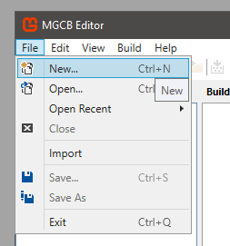
This will give you a new empty project to add content to.
Importing an XNA (.contentproj) content project
If you are starting from an existing XNA project, the MGCB Editor supports importing your existing .contentproj. Again you can access this from the “File” menu:
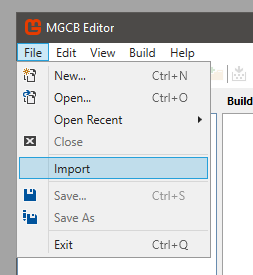
This creates a new project, adding all your content and content settings from the XNA project. If you happened to be using custom processors, you may need to edit the assembly references to link to the correct paths which we discuss next.
Project Settings
You can edit the content project settings directly from the property grid editor after selecting the project node in the tree view:
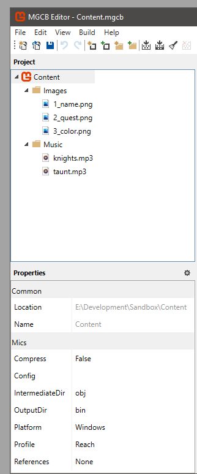
This is where you set up the folders for output, the platform to target, the assembly references for custom processors, etc.
Note that currently, the MGCB Editor is not set up to support multiple target platforms. This means you may need to manage multiple content projects or manually change the target platform between builds. If you are using
MonoGame.Content.Builder.Taskto build content as part of building your project, the correct platform will automatically be targeted.
Adding Content Items
Once you have a project set up you can add content to it for building. You can do this from the “Edit” menu:
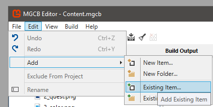
Selecting “New Item...” will bring up the New Item dialog which displays a list of new items that can be created:
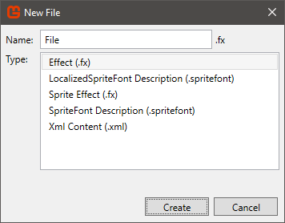
When you select “Existing Item...”, you can select an existing item from disk to add to the content project.
Built-in Content Importers and Processors
MonoGame provides default Importers (File Read) and Processors (File Transform) methods for handling almost all standard content which is automatically selected for known content types. In most cases, you do not need to alter these settings when adding content. The lists below highlight the default configuration options for each file type.
If you wish to create your own Importers and Processors for custom file types, please see the "Custom Content Processors" section.
File Types
The MonoGame Content Builder (MGCB) pipeline supports many different file types within a content project, along with several default processing options for those files:
Images
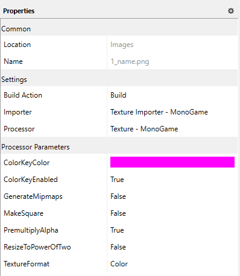
Images come in a variety of formats such as png or jpg, most of which are natively supported by the MonoGame content pipeline.
Additionally, the following options are configurable per image asset when imported:
| Property | Description |
|---|---|
| ColorKeyColor | Background color used for transparency |
| ColorKeyEnabled | If enabled, any colors identified using the Color Key will be marked as transparent (Alpha 0). The default value is false |
| GenerateMipmaps | If enabled, this will generate MipMaps for the selected texture. The default value is false |
| MakeSquare | if enabled this will make best efforts to expand the image to a square. The default value is false |
| PremultiplyAlpha | If enabled this will treat the selected texture as an Alpha Mask. The default value is false |
| ResizeToPowerOfTwo | If enabled this will resize the image dimensions to the next largest power of 2 size, e.g. 128x128 or 512x512. The default value is false |
| TextureFormat | Selected format of the Texture to process, e.g. raw Color, DXT. The default value is color |
Audio
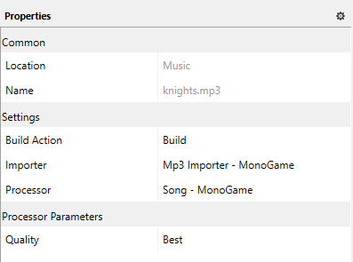
MonoGame supports several audio formats to cope with a wide variety of audio needs, from Wav files for effects to MP3's for songs/background music. The type of audio you use will depend on the audio needs for your project.
Audio can be configured to use either the Sound Effect processor which imports audio as a SoundEffect which is generally used for short and quick audio sounds. Alternatively, by selecting the Song processor, the audio will be imported as a Song which is used for long-running audio using the Media Player class.
| Property | Description |
|---|---|
| DebugMode | Depending on the setting, this will either leave the audio uncompressed (for speed) when debugging or optimized for a production build. The default value is false |
| Quality | The quality of compression to be used when compiling the asset. The default value is best |
Models
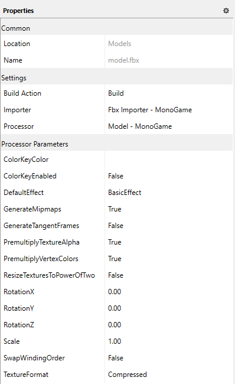
| Property | Description |
|---|---|
| ColorKeyColor | Background color used for transparency |
| ColorKeyEnabled | If enabled, any colors identified using the Color Key will be marked as transparent (Alpha 0). The default value is false |
| DefaultEffect | The default effect class to apply to this model. The default value is BasicEffect |
| GenerateMipmaps | If enabled, this will generate MipMaps for the selected texture. The default value is false |
| GenerateTangentFrames | Generate model tangents for use in Normal Mapping. The default value is false |
| PremultiplyTextureAlpha | If enabled this will treat the selected texture as an Alpha Mask. The default value is false |
| PremultiplyVertexColors | If enabled this will treat the selected texture as a Vertex Color Mask. The default value is false |
| ResizeTexturesToPowerOfTwo | If enabled this will resize the models texture(s) dimensions to the next largest power of 2 size, e.g. 128x128 or 512x512 |
| RotationX | Default model X Axis Rotation–Number, in degrees of rotation. The default value is 0 |
| RotationY | Default model Y Axis Rotation–Number, in degrees of rotation. The default value is 0 |
| RotationZ | Default model Z Axis Rotation–Number, in degrees of rotation. The default value is 0 |
| Scale | Default model scale. The default value is 1.0f |
| SwapWindingOrder | Boolean value indicating if the winding order is swapped. This is useful for models that appear to be drawn inside out. The default value is false. |
| TextureFormat | Selected format of the Texture to process, e.g. raw Color, DXT. The default value is compressed |
Fonts
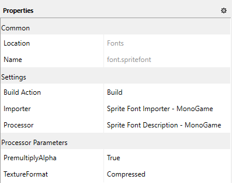
MonoGame uses a Font descriptor file to describe the type of font to import, the font in question needs to be installed in the machines Font library for it to enable the project to build, else this will result in a Font importer error.
It is recommended you keep a copy of the Font file in the content folder for reference to avoid issues with missing Fonts, that way any developer on the project can re-add the Font to their machine when needed.
| Property | Description |
|---|---|
| PremultiplyAlpha | If enabled this will treat the font texture that is generated as an Alpha Mask. The default value is false |
| TextureFormat | Selected format of the font Texture to process, e.g. raw Color, DXT. The default value is compressed |
See the TrueType fonts section for more detail on working with Fonts. Additionally, check out the Localization section for details on working with managing translated text within your project using resx files.
Effects
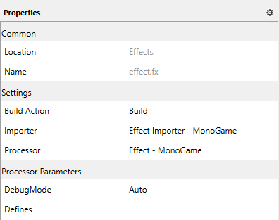
Effects in MonoGame are shaders that have been built with a supported shader language (HLSL / GLSL) which will then be pre-processed into a common shader language / effect used by MonoGame.
| Property | Description |
|---|---|
| DebugMode | Depending on the setting, this will either leave the audio uncompressed (for speed) when debugging, or optimise for a production build. The default value is false |
| Defines | Custom compiler defines to enable specific code paths (#if) in the shader file, if appropriate. The default value is empty |
See the Effects section for more detail on the built-in effects with MonoGame and how to generate your own custom effects.
Video
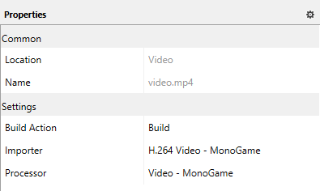
MonoGame uses a custom video player which converts video files into a format that can be used and rendered by MonoGame using a series of VideoTextures.
There are no configurable properties for the Video Player currently.
Text (e.g. XML)
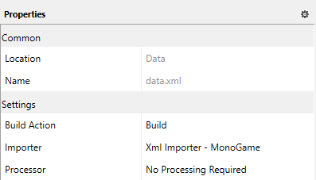
One of the most powerful processors in MonoGame is the text processor, ideally used for XML files used to manage Game Class content in text files rather than writing it all in code.
So long as the XML file conforms to the MonoGame (XNA) standard, it will generate data within the game for use in the solution.
For an example on how to use XML in your MonoGame project, check out this article.
Custom Content Processors
Just like XNA, the MonoGame content pipeline supports custom content processors. To use them you need to rebuild them correctly to work against MonoGame.
The first step is removing all Microsoft.Xna.Framework.XXX references and replacing them with references to MonoGame.Framework and MonoGame.Framework.Content.Pipeline. This is required as you will no longer be building against Microsoft XNA.
Once your references are working, you then need to change your assembly target platform. MonoGame does not support x86 (aka 32bit) assemblies in the content pipeline. This is mainly to allow of processing really big content as well as to simplify the number of configurations and native code dependencies. For this reason, you should try to target “Any CPU” with your custom content assembly.
After you have done these fixes, you should be able to add these new processors to the content project “References”.
Building Content
The MGCB Editor has 3 actions related to building content: Build, Rebuild and Clean:
- Build - This will build all content that needs to be built and put it in the output directory (bin by default). Content will be skipped if it has not changed since the last build. The time source content was last edited is saved in the intermediate directory (obj by default) to determine if content changed since the last build.
- Rebuild - Cleans the project first and then Builds it again.
- Clean - Cleaning the project will empty the output and intermediate directories.
Linking Content To Your Game
Once you have built your content, you have a few different ways to add it to your game project. They all have the same goal, to get the built XNB's in your project output folder so a ContentManager can easily find and load them.
MonoGameContentReference
The simplest method is to set up your game project from one of the templates that come with the SDK. When you create a new project, it will include a Content.mgcb file with its Build Action set to MonoGameContentReference and a reference to MonoGame.Content.Builder.Task which processes MonoGameContentReference items.
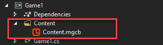
This build action is defined in the .targets file here.
The MonoGameContentReference is set up so that when the project is built, the MGCB will automatically build any new/modified content and copy the resulting XNB's to the project output directory, so they can be used in the project. This way you do not even have to manually build the content with the MGCB Editor.
Just add your content to the .mgcb with the MGCB Editor and the rest will happen when you build your project. The content files do not need to be added to your project.
Manual Copy
If you do not want to use the automated process, you can build the content project with the MGCB Editor and copy the XNB's to the output folder of your project manually.
Add As Content
If you are using Visual Studio, you can bypass the content pipeline all together and simply the files to your C# game project directly (or as links). Create a folder in the project called Content then right-click on the folder and select Add > Existing Item.
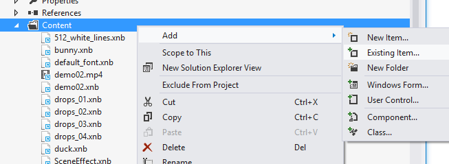
You will now see a file dialog from which you can add your content files.
Note that if you do not want Visual Studio to make a local copy of the files. Make sure to use “Add As Link” when “Linking” files.
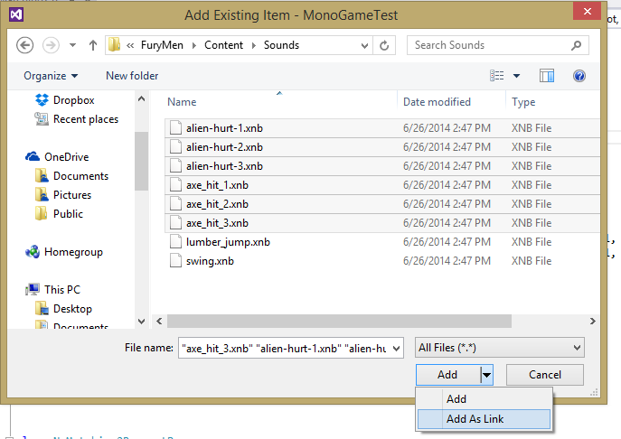
Once the files are added you will need to select them all and change their properties in the properties window to:
- "Build Action" to Content
- "Copy to Output Directory" to Copy if newer
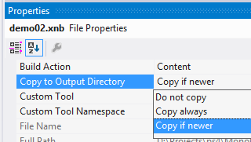
Add With Wildcard
The more automatic option is to edit your game .csproj manually and have it include you content automatically using wildcards.
To do this just open the .csproj with any text editor, then add the following after any other **<ItemGroup>**:
<ItemGroup>
<Content Include="Content\**\*.xnb">
<CopyToOutputDirectory>PreserveNewest</CopyToOutputDirectory>
</Content>
</ItemGroup>
Then any files you put in a Content folder within your game project will automatically be included in the build.
Reporting Bugs
If you run into any problems with MGCB or the MGCB Editor, please ask for help on the community site or submit a bug report on GitHub.